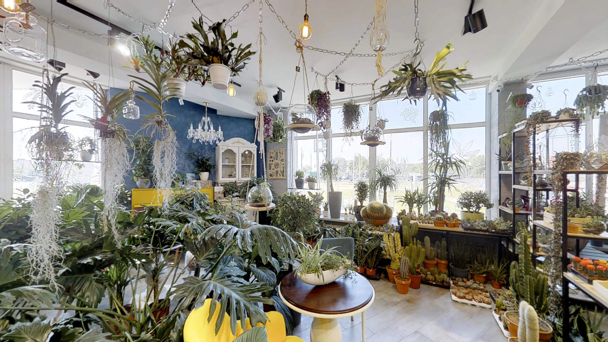
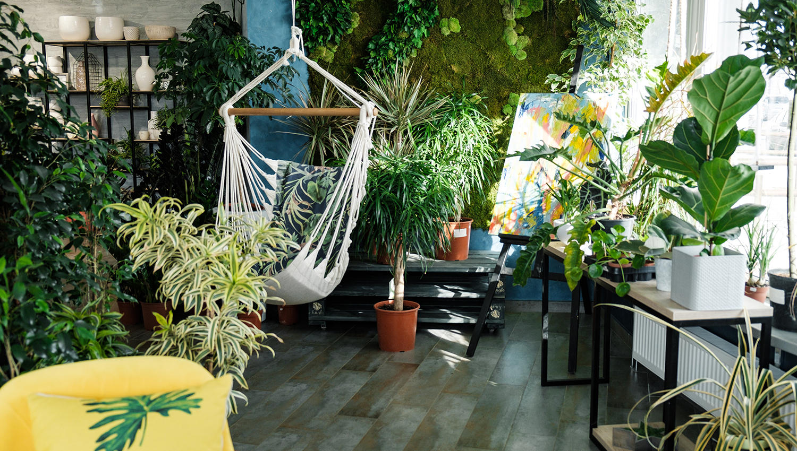
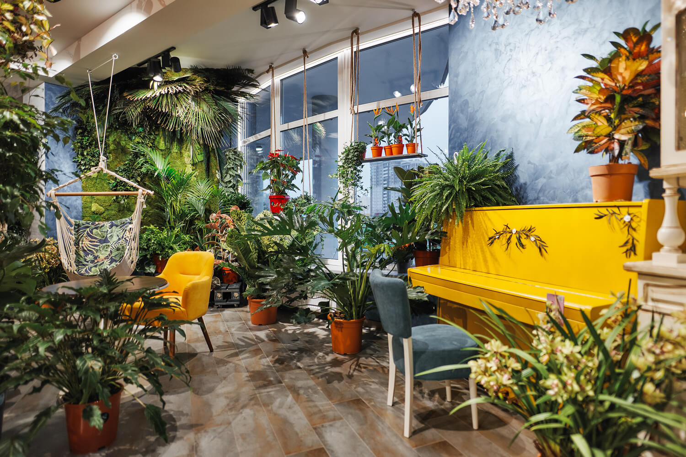

Цветок - это совершенно новый подход к появлению цветов в Вашем доме:
-
230 квадратных метров зеленых джунглей, в которых обитают комнатные растения от классических фикусов до экзотических бананов, бонсаев разных размеров и растений-хищников.
-
Мини-сады с необычными суккулентами и кактусами, флорариумы и фитодекор.
-
Доставка букетов и горшечных растений.
-
Консультации биологов, пересадка растений.
-
Озеленение офисов и жилых помещений.

Каждый привык получать экспертную консультацию в мебельном салоне или магазине электроники.
В салоне "ЦветОк" мы используем такой же подход при продаже растений.
Здесь Вам не придется выбирать комнатное растение наугад.

Биологи салона "ЦветОк" дадут исчерпывающую консультацию по любому растению, представленному в салоне и помогут выбрать именно то,
что подойдет под условия вашего жилья и ожидания.
А еще Вы сможете получить консультацию по уходу за приобретенным цветком спустя любое время после покупки.
